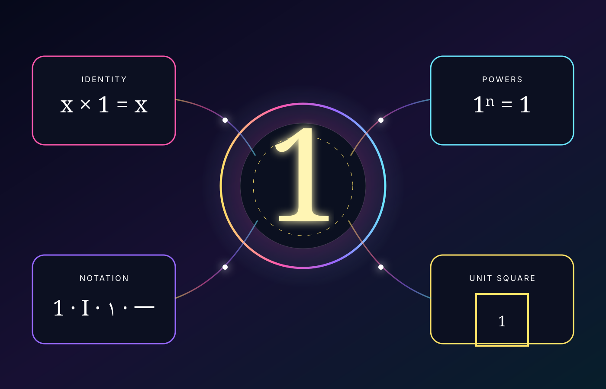

Gallery 001D · Hands-on laboratory
Touch
the one.
Four small experiments make the properties of 1 tangible.

Experiment 01
The identity machine
Feed the machine any finite number. Multiplication by 1 gives it back unchanged.
Experiment 02
The stubborn power
Move the exponent through negative and positive integers. One never budges.
Experiment 03
Change the costume
The quantity stays one even when its notation changes.
Experiment 04
The unit square
A square with side length 1 has area 1 × 1 = 1. It is the geometric prototype of a unit area.
Area = 1
Exit through the atlas
1
Gallery 001 remains fully open, with Galleries 002, 003, and 004 illuminated beside it. Return to the infinite atlas to move among 1, 2, 3, and 4—or zoom outward toward future museum doors.
Return to the number atlas →